Introduction
Alors que de nombreux élèves cherchent dans quelle structure poursuivre leur cursus, les considérations écologiques sont de plus en plus présentes. En témoigne la mobilisation des étudiants pour un réveil écologique. Dans le contexte actuel, les institutions sont de plus en plus nombreuses à franchir le pas afin d’avancer sur ces sujets, notamment par le fait de proposer de nouveaux enseignements, de repenser les cours existants ou de mettre en place des bonnes pratiques au quotidien.
Sachant que le site web est souvent la première source d’information pour de nombreuses écoles et universités, nous avons décidé de mesurer l’impact carbone de ces sites.
Sommaire
Résultats – Universités – France
Résultats – Écoles de Commerce – France
Résultats – Écoles d’Ingénieurs – France
Résultats – Universités du Monde
Classements
Bilan
Méthodologie
Quelles sont les écoles / universités présentes dans nos classements ?
Pour déterminer quels établissements et structures étudier, nous avons constitué un échantillon qui se veut représentatif de la façon suivante :
- Le classement par l’Etudiant des 50 premières universités de France en termes de réussite en master (avril 2021).
- Le classement par l’Etudiant des 50 premières écoles d’ingénieurs, classées sur des critères d’excellence académique, d’ouverture internationale, de proximité avec les entreprises et d’ouverture à de nouveaux publics (janvier 2022).
- Le classement par l’Etudiant des 37 meilleures grandes écoles de commerce, sur des critères d’excellence académique, de proximité avec les entreprises, d’excellence internationale, de salaires, de temps passé à l’étranger, de satisfaction des diplômés et de travail à l’étranger (novembre 2021).
- Le classement 2022 par Times Higher Education des 50 meilleurs universités à l’échelle mondiale, sur la base de 13 critères.
Votre établissement n’apparaît pas dans nos classements ? Vous souhaitez connaître les détails de votre position ? Vous souhaitez améliorer votre place dans ce classement ? Contactez-nous.
Nous verrons ici ce qui ressort des mesures effectuées sur les sites des établissements de chacune de ces catégories. Nous nous sommes limités aux pages d’accueil afin d’avoir un dénominateur commun et parce qu’il s’agit le plus souvent du point d’entrée pour les visiteurs.
Toutefois, l’analyse pour chaque site mériterait d’aller plus loin, notamment au vu des statistiques d’usage de chacun de ces sites, afin de se concentrer sur les pages les plus fréquentées mais aussi pour se faire une idée plus précise des parcours les plus fréquents. A noter qu’une bonne partie des sites étudiés proposent également l’accès à un ENT (Environnement Numérique de Travail). Ce type d’outil très répandu constitue un sujet à part entière lors de l’estimation des impacts environnementaux des services numériques utilisés par les élèves. D’autant plus dans un contexte sanitaire où une partie des enseignements se font à distance. Sur ce type de sujet, l’accessibilité devient d’autant plus un sujet essentiel afin de permettre à chacun d’accéder, même depuis chez lui, aux mêmes informations et aux mêmes fonctionnalités que ses camarades.
Résultats des Universités de France
Synthèse – chiffres clés
La moyenne d’impact carbone par page et par minute de ce classement est de 0,44 gEqCO2.
18 sites sur les 50 se situent en-dessous de cette moyenne.
L’Eco-score Greenspector moyen est de 47,38 et 26 sites se situent au-dessus.
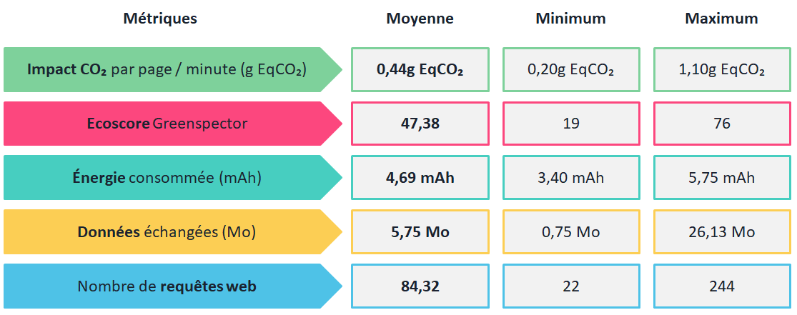
Le Top 3
En termes d’impact carbone, le top 3 de ce classement est constitué des universités suivantes :
1. Université Savoie Mont Blanc : un site WordPress qui tire son épingle du jeu par l’optimisation des images ainsi que la mise en place du lazy-loading et du cache côté client. Ces bonnes pratiques (ajoutées à d’autres) font déjà une belle différence, même s’il reste quelques axes d’amélioration.
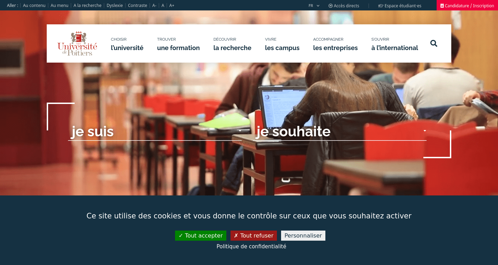
2. Université de Paris-Saclay : un site plutôt sobre mais surtout optimisé techniquement (lazy-loading des images, mise en cache, optimisation des médias, etc).
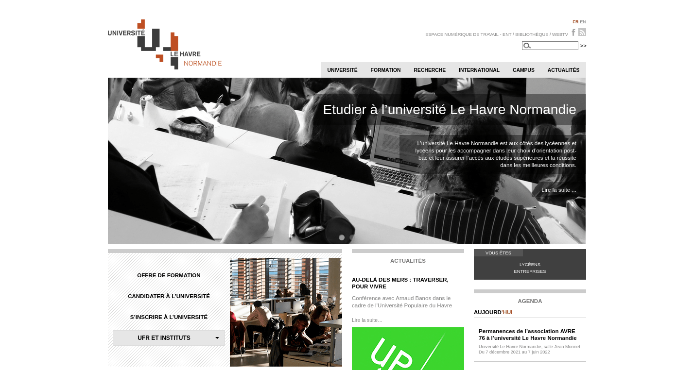
3. Université Le Havre Normandie : un site léger et élégant qui pourrait encore bénéficier de quelques optimisations techniques voire d’un peu plus de sobriété.
NB:
Initialement le site web de l’Université de Paris (ex Paris Diderot) : une page étonnamment dépouillée qui renvoie au final… vers le site de u-patis.fr qu’on retrouve dans le Flop 3 ! Ce site est donc hors-concours.
Le Flop 3
En termes d’impact carbone, le flop 3 de ce classement est constitué des universités suivantes : Université Versailles Saint Quentin, Université Côte d’Azur, Université de Paris (ex Paris 5). Ces 3 pages sont très (trop) riches en contenus et pourraient être facilement allégées (dans un premier temps) puis optimisées.
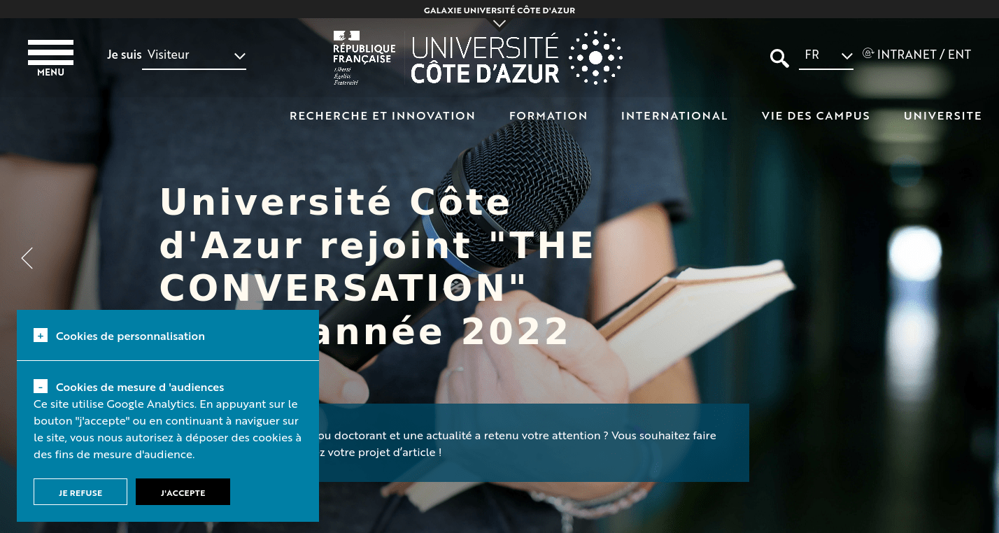
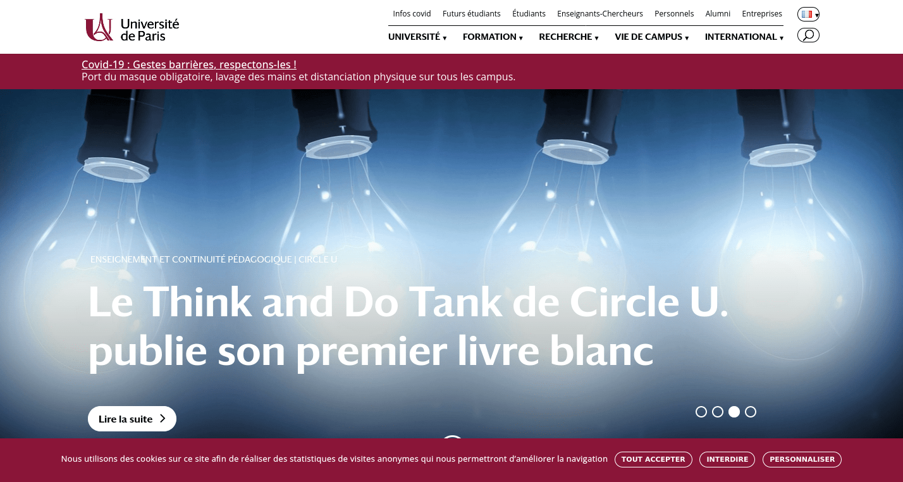
Résultats des grandes Écoles de Commerce de France
Synthèse – chiffres clés
La moyenne d’impact carbone par page et par minute de ce benchmark est de 0,51 gEqCO2. 11 sites sur les 38 se situent en-dessous de cette moyenne.
L’Eco-score Greenspector moyen est de 41,27 et 15 sites se situent au-dessus soit un peu moins de la moitié.
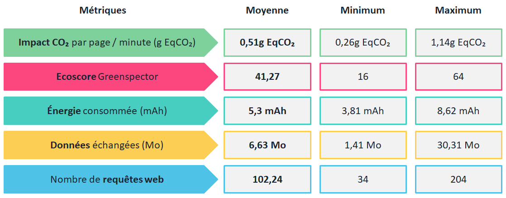
Le Top 3
En termes d’impact carbone, le top 3 de ce classement est constitué des écoles de commerce suivantes :
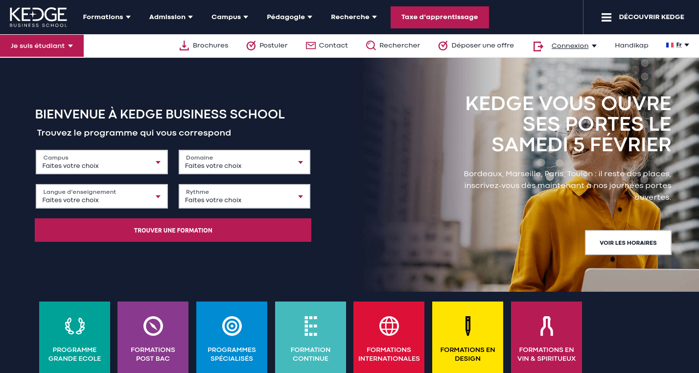
1. Kedge Business School : les médias sont dans l’ensemble optimisés et le cache correctement mis à profit. Il reste quelques axes d’amélioration.
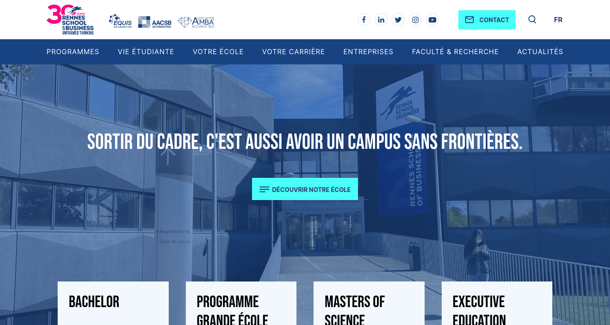
2. Rennes School of Business : le cache est exploité mais certains médias gagneraient à être optimisés. La page d’accueil repose beaucoup sur le scroll, ce qui inciterait à mettre en place le chargement différé (lazy-loading).
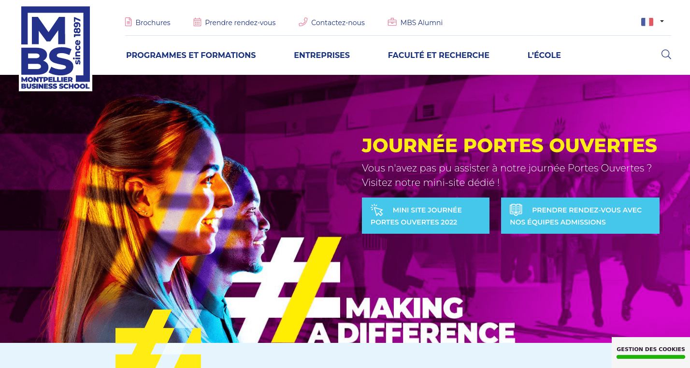
3. Montpellier Business School : un site WordPress assez riche en contenus, la plupart optimisés, mais qui souffre d’un grand nombre de fichiers CSS et JS. Il faudrait peut-être voir du côté des plugins installés mais surtout du thème et du page-builder. D’autres axes d’amélioration restent à mettre en œuvre.
Anja Stoll, cheffe de projet RSE – Climat & Biodiversity Lead chez Kedge Business School
Témoignage de Kedge Business School
– Quelle place prend le numérique dans l’engagement environnemental de votre école ?
Dans les établissements d’enseignement supérieur le numérique prends une place de plus en plus importante, autant au niveau de la qualité des équipements qu’au niveau des services. La crise sanitaire a considérablement augmenté les attentes au numérique et étendu ses usages.
Ayant une empreinte carbone, mais aussi une empreinte ressources et déchets importante Kedge a choisi en octobre 2020 de de s’inscrire dans le projet pilote « numérique responsable » porté par le mouvement « campus responsables ». Aux côtés de 3 autres établissements d’enseignement supérieur Kedge BS a pu profiter d’un accompagnement sur mesure pendant 8 mois sur le sujet.
Ce projet pilote nous a permis de faire un état des lieux et de définir un plan d’action pluriannuel qui couvre de nombreux aspects tels que la durée de vie des équipements IT, l’usage du cloud, l’impact de la visioconférence, les critères d’achat ou encore le reconditionnement des équipements en fin de vie. Pour autant, une stratégie de numérique responsable doit non seulement prendre en compte les aspects environnementaux, mais aussi sociaux. Ainsi le plan d’action comprend également des actions de formation et de sensibilisation à la tech for good, d’outils handi-compatibles ou encore la prévention du cyberharcèlement.
– Votre site obtient la meilleure note d’impact dans votre catégorie, quels sont les bonnes pratiques fonctionnelles, graphiques, techniques que vous avez mises en place que vous pourriez partager avec les autres écoles ?
Nos chefs de projets digitaux ont travaillé main dans la main avec le prestataire technique pour mettre en place de nombreux améliorations :
-Optimisation du poids des images visibles sur toutes les pages (traitement manuel en amont de la publication et compression automatique par le système)
– Systèmes avancés de mise en cache serveur et navigateur afin de limiter le téléchargement systématique des ressources nécessaires au chargement d’une page
– Utilisation du système de « Lazy loading » permettant de charger uniquement les images visible à l’écran (au lieu de charger toutes les images d’une page, même celles très bas que l’utilisateur n’ira pas voir)
-Minification du code pour alléger au maximum le poids des fichier à télécharger à chaque chargement de page
– Pas d’hébergement de fichier très lourds comme des vidéos (tout est sur Youtube)
Ceci découle d’une vraie volonté de la l’école d’intégrer une démarche durable et inclusive dans tous le métiers, y compris le digital. Ainsi entre 10 et 15% des moyens mis à disposition des développements informatiques sont directement alloués à des actions destinés à améliorer la performance environnementale de nos plateformes.
– Avez-vous déjà mesuré la consommation et calculer l’impact de votre site auparavant ?
Oui, notre bilan carbone intègre systématiquement l’analyse de l’empreinte carbone de notre site web. Pour aller plus loin, un audit « webperf » est actuellement en cours dans l’objectif d’améliorer encore plus les performances et temps de chargement de notre site. À fortiori, les actions en découlant auront également pour effet de diminuer d’autant plus notre impact carbone.
Le Flop 3
En termes d’impact carbone, on trouve en bas du classement les écoles suivantes : ISG Paris, ESC Clermont et EMLV. Là encore, ces 3 sites sont très riches en contenus, notamment vidéo.
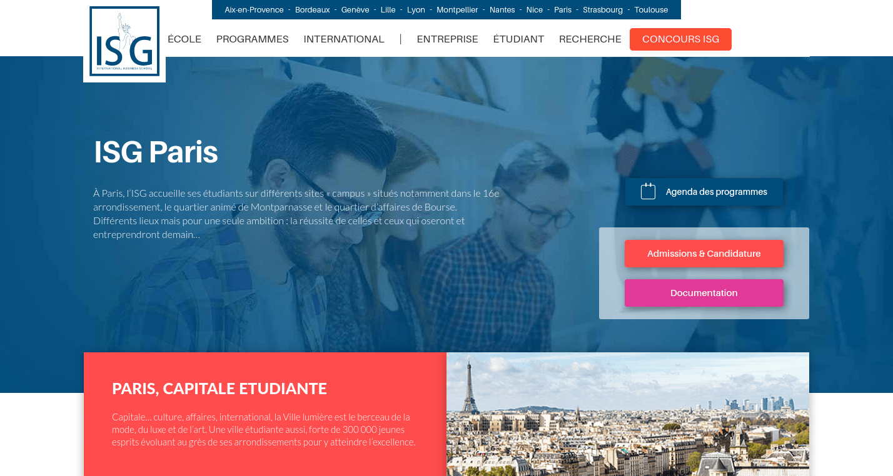
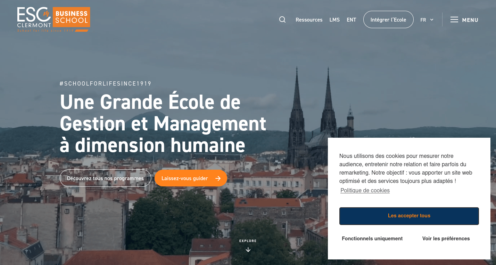
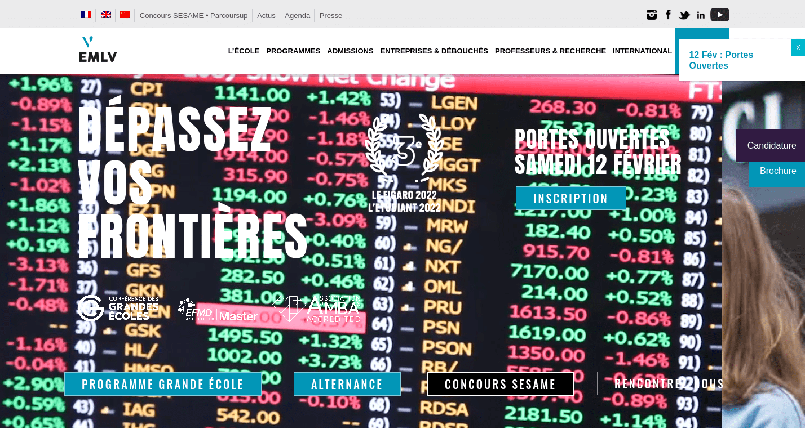
Résultats des Écoles d’Ingénieurs de France
Synthèse – chiffres clés
La moyenne d’impact carbone par page et par minute de ce benchmark est de 0,47 gEqCO2. La moitié des 50 sites se situent en-dessous de cette moyenne.
L’Eco-score Greenspector moyen est de 43 et 13 sites se situent au-dessus soit un peu moins de la moitié.
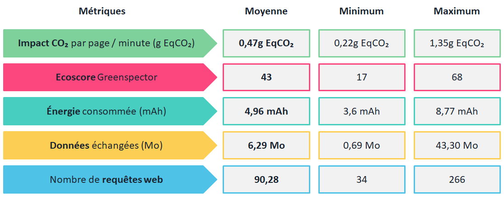
Le Top 3
En termes d’impact carbone, le top 3 de ce classement est constitué des écoles d’ingénieur suivantes :
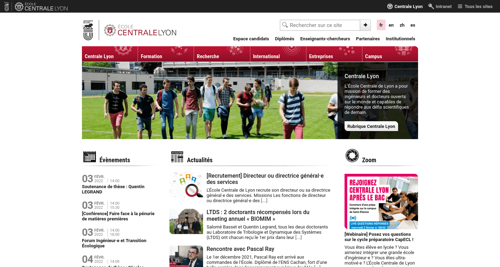
1. Ecole Centrale Lyon : un site d’une grande sobriété.
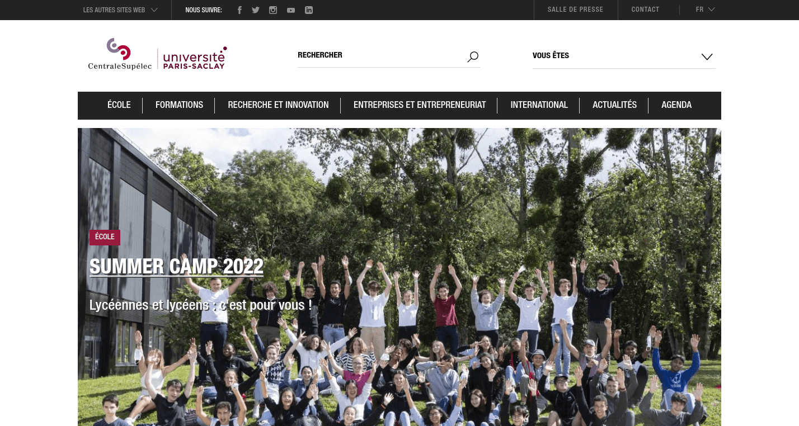
2. CentraleSupélec : un site relativement sobre qui pourrait aller encore plus loin via la mise en œuvre de bonnes pratiques supplémentaires.
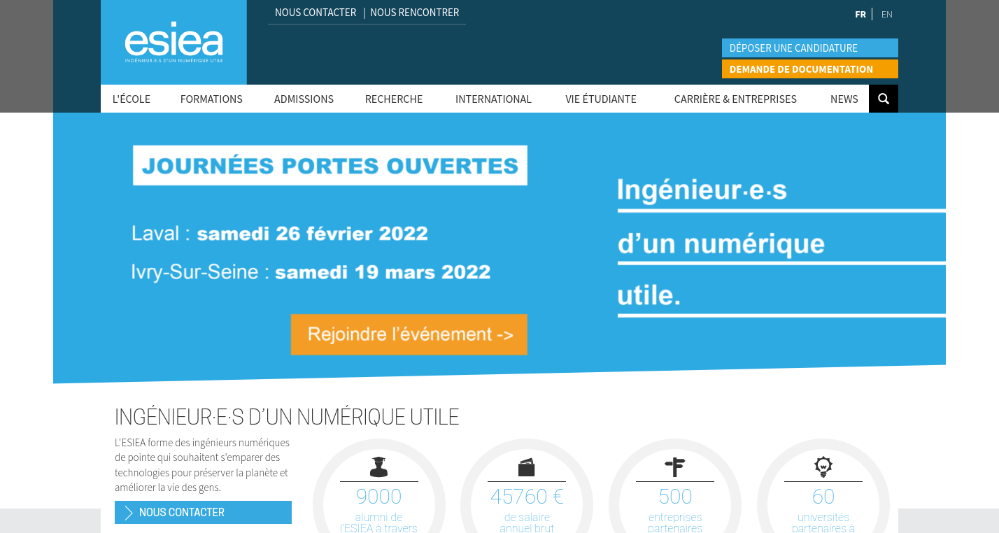
3. ESIEA : un site WordPress plutôt sobre au niveau des contenus mais qui offre encore quelques axes d’amélioration.
Le Flop 3
En termes d’impact carbone, on trouve en bas du classement les écoles suivantes : ISEP, ENIM et ESILV. Une fois de plus, ce sont des sites riches en contenus qui misent beaucoup sur la vidéo (voire pour certains sur un chatbot).
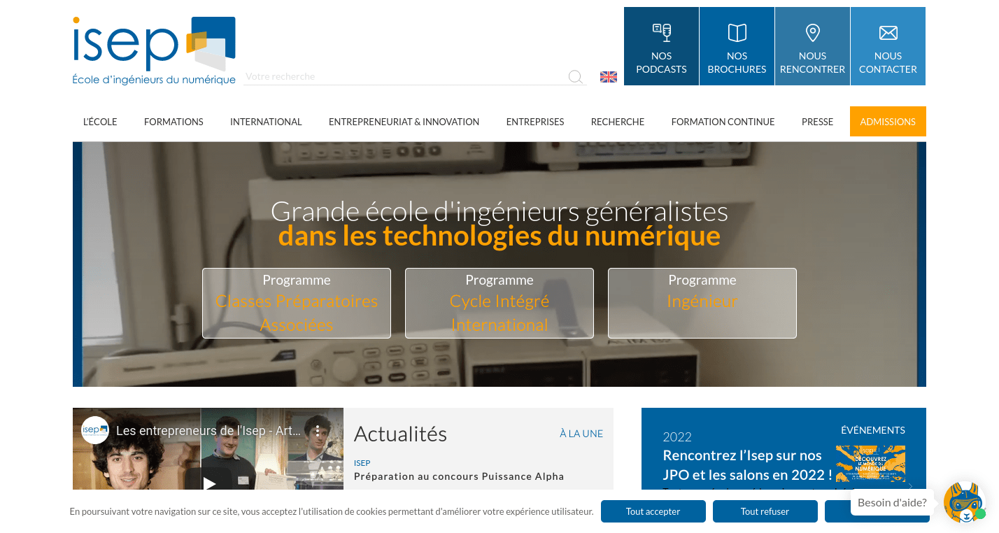
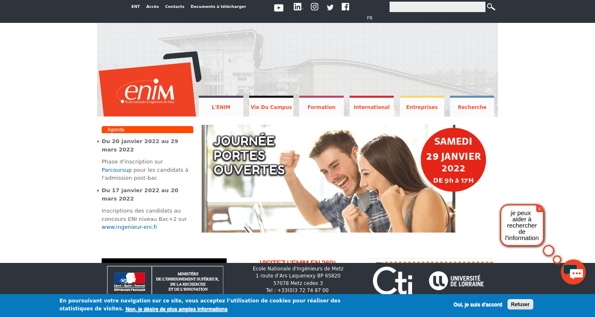
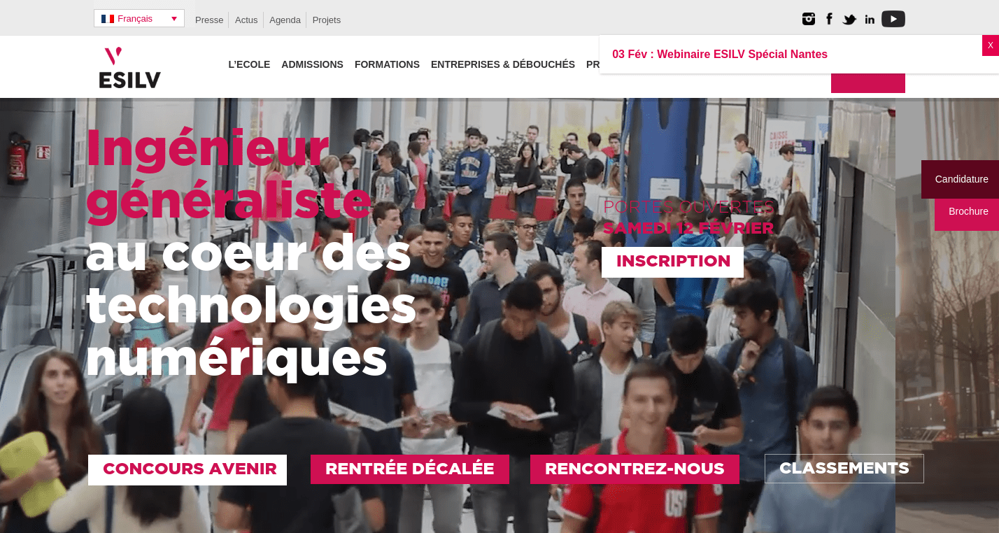
Résultats des meilleures Universités au Monde
Afin de contrebalancer tous ces classements limités à la France, il nous a paru intéressant de nous intéresser à un classement des sites d’universités à travers le monde.
Synthèse – chiffres clés
La moyenne d’impact carbone par page et par minute de ce benchmark est de 0,50 gEqCO2. Seuls 9 des 50 sites se situent en-dessous de la moyenne. On note ici que les extrêmes sont beaucoup plus marqués, notamment le Flop 3 qui regroupe 3 sites très impactant.
L’Eco-score Greenspector moyen est de 53,18 et 28 sites se situent au-dessus soit un peu moins de la moitié.
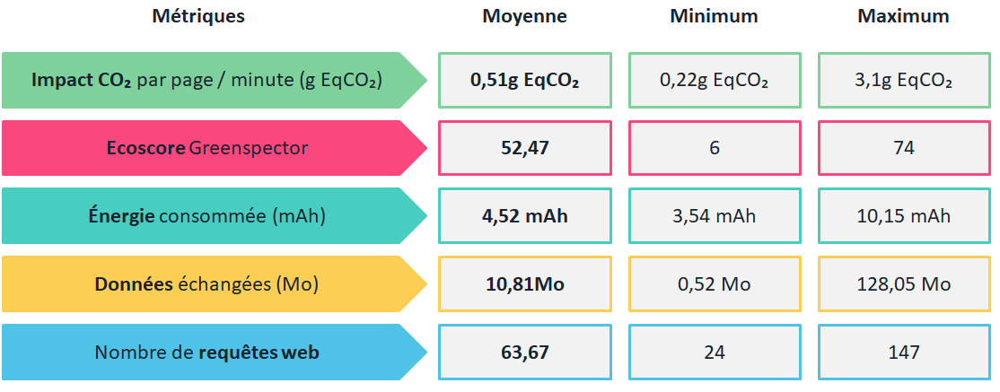
Le Top 3
En termes d’impact carbone, le top 3 de ce classement est constitué des universités suivantes :
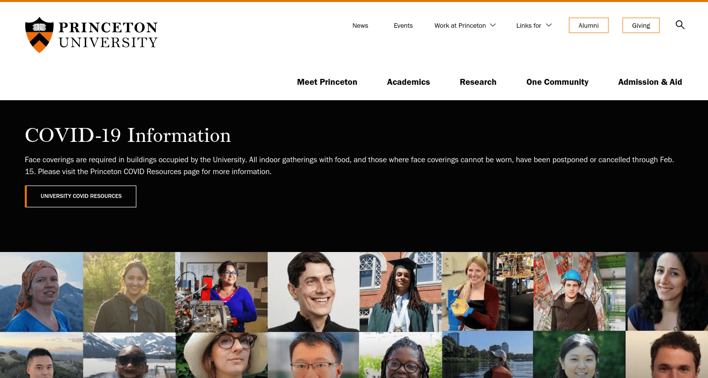
1. Princeton University : ce site Drupal relativement léger bénéficie d’une gestion du cache très efficace. Un effort particulier semble avoir été consacré à l’accessibilité, même si quelques anomalies persistent.
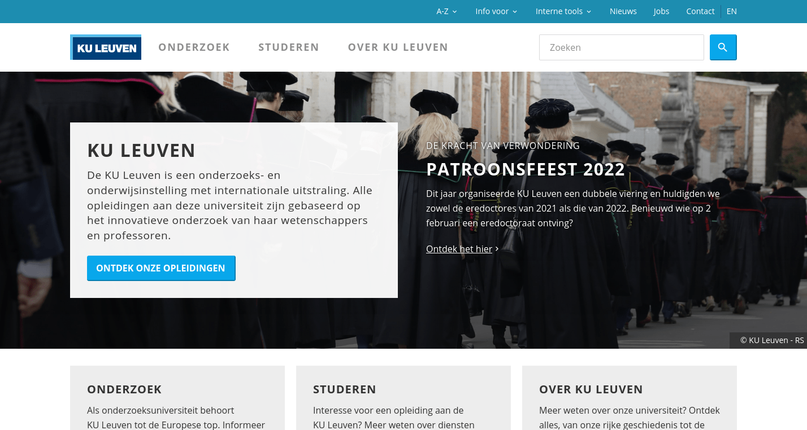
2. Ku Leuven : une page riche en informations mais sobre en contenus.
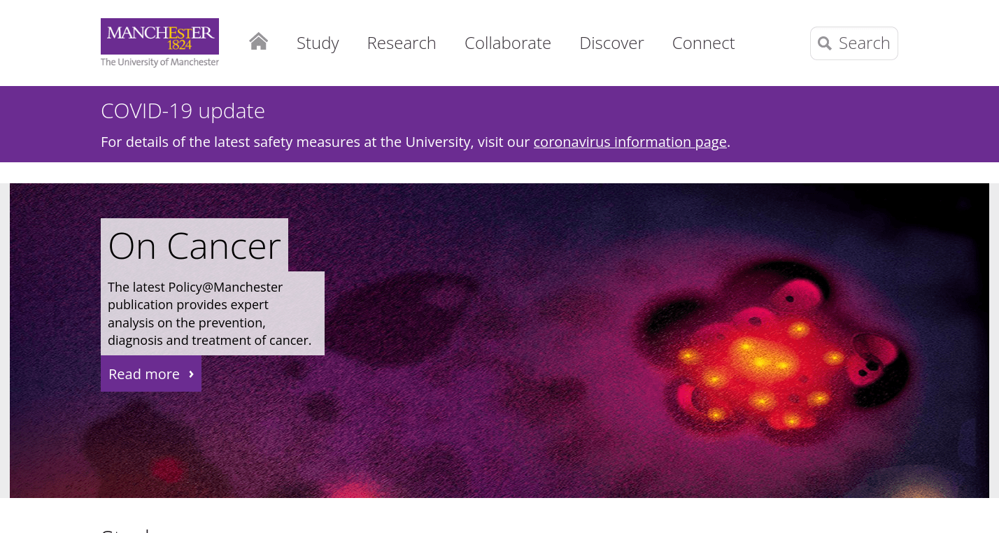
3. University of Manchester : un site relativement léger et assez bien optimisé. Des efforts considérables sur l’accessibilité ont été effectués mais il reste quelques axes d’amélioration en termes de réduction d’impacts environnementaux.
Le Flop 3
En termes d’impact carbone, on trouve en bas du classement les universités suivantes : Peking University, Tsinghua University, University of Hong Kong. On trouve encore sur ces trois pages de nombreux contenus (y compris vidéo) mais aussi beaucoup d’animations, en particulier des carrousels.
Les derniers sites de ce classement ont en commun une page d’accueil extrêmement chargée en contenus et en composants. Ceci évoque une tendance de design que l’on retrouve sur certains sites asiatiques depuis plus de 10 ans.
On en trouve un exemple en comparant le site de McDonald’s pour la Chine avec son homologue britannique.
Le design y est plus riche, plus complexe et coloré. Ceci est lié à des différences culturelles, linguistiques et techniques. Si ceci n’est pas rédhibitoire en soi et s’inscrit dans la volonté d’adapter le contenu aux utilisateurs, il devient dans ce cas d’autant plus déterminant de proposer la page de la façon la plus efficiente possible.
Voici un article qui revient plus en détail sur ce phénomène et ses raisons possibles.
Classements
Classement des Universités Françaises[table “Universites_FR_22” not found /]Classement des Écoles de Commerce Françaises[table “Ecoles_Commerce_FR_22” not found /]
Classement des Écoles d’Ingénieurs Françaises[table “Ecoles_Ingnieurs_FR_22” not found /]
Classement des Universités Internationales[table “Universites_Monde_22” not found /]
Bilan
Tous classements confondus, on note que le site le plus impactant en CO2 l’est 7 fois plus que le moins impactant !
On note aussi que l’Ecoscore Greenspector moyen est plus élevé pour le classement monde que pour les classements d’établissements français. En moyenne, les sites du classement mondial sont plus nombreux à être mieux optimisés, ce qui n’empêche pas les 3 pires sites du classement monde d’être plus impactants en carbone que n’importe quel site des classements d’établissements français.
Sur les sites qui se hissent en haut de chaque classement, les avantages apportés par l’application de certaines bonnes pratiques sont indéniables. Toutefois, ceux qui s’en sortent le mieux complètent (ou précèdent) leurs actions sur l’efficience par un effort de sobriété.
Enfin, on trouve encore sur la plupart des sites des erreurs d’accessibilité, ce qui peut être rédhibitoire pour l’intégration d’élèves en situation de handicap ou en tout cas pour que ces derniers accèdent facilement à certaines informations ou services.
Pour plus d’explications des résultats et du détails des bonnes ou mauvaises pratiques, nous vous invitons à (re)découvrir le replay du webinar par Laurent DEVERNAY, expert sobriété numérique chez Greenspector.
Selon le site de l’Education Nationale, 24% de la population active en France serait en situation de handicap. Pour rappel, 80% des handicaps ne sont pas immédiatement visibles (notamment parce que les types de handicaps sont très nombreux).
Alors même que l’accessibilité des services numériques fait l’objet d’une réglementation en particulier en France (via le RGAA), la mise en conformité a encore bien du retard, notamment pour les services numériques publics. A titre d’exemple, une étude du WebAIM estime que 97,4% du million de sites web parmi les plus visités comportent au moins une erreur d’accessibilité.
Ce sera par exemple le cas pour des ENT ou sites sur lesquels la langue est mal définie, ce qui entraînera des problèmes pour les étudiants qui voudraient traduire automatiquement les textes dans une autre langue (et pour des étudiants utilisant un lecteur d’écran).
Méthodologie GreenspectorPour chacun de ses sites web, mesurés sur un smartphone S7 (Android 8), les mesures ont été réalisées au travers de notre Greenspector Benchmark Runner, permettant la réalisation de tests automatisés. Les mesures ont été réalisées fin janvier 2022.
Détail des scénarios :
– Chargement du site web
– Scroll de la page
– Inactivité site web en premier-plan
– Inactivité site web en arrière-plan
Chaque mesure est la moyenne de 3 mesures homogènes (avec un écart-type faible). Les consommations mesurées sur le smartphone donné selon un réseau de type wifi peuvent être différentes sur un PC portable avec un réseau filaire par exemple. Pour chacune des itérations, le cache est préalablement vidé.
Découvrez comment Greenspector évalue l’empreinte environnementale d’un service numérique.